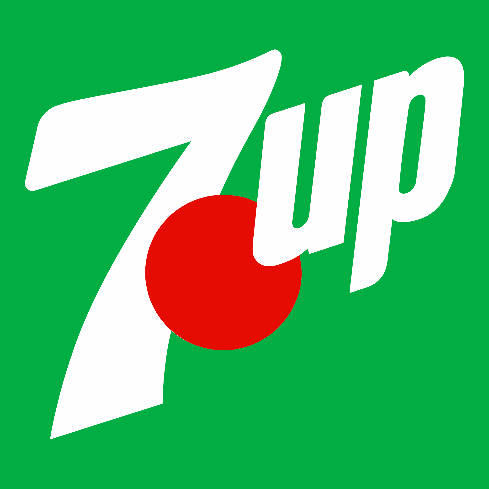

홈 > 브랜드 매거진 > Mercado Famous
Mercado Famous
Mercado Famous는 뉴욕에 기반을 둔 스페인 이베리코 햄·큐어드 미트 전문 식품 브랜드로, 고품질 스페인산 육가공품을 미국 시장에 소개한다. 브랜드 시스템은 브루클린 스튜디오 Gander가 맡았다.
산업 분야 브랜드·비즈니스 · 공개 등급 편집 검수 · 브랜드 평가 4 ★
Me
Mercado Famous
한눈에 보는 브랜드
Mercado Famous는 뉴욕에 기반을 둔 스페인 이베리코 햄(하몽)·큐어드 미트 전문 식품 브랜드로, 고품질 스페인산 육가공품을 미국 시장에 소개하는 것을 지향한다. 창업자는 카르멘 첸 우와 아론 루오이며, 스페인 전통에 뿌리를 두되 미국 시장을 겨냥한 샤퀴테리·델리 카테고리에 속한다.
브랜드 아이덴티티
브루클린의 브랜딩 스튜디오 Gander가 브랜드 시스템을 맡았다. 유럽의 정육점·델리카트슨이 단일 컬러를 일관되게 쓰는 점에서 착안해 대담한 로열 블루를 핵심 색으로 삼고 갈색·녹색·주황·흰색을 보조로 운용했다.
타이포그래피는 동시대 서체 GT Walsheim과 빈티지 소스 기반의 Jeff Levine 서체를 혼합해 바르셀로나 등 스페인 도시 간판을 연상시키는 커스텀 워드마크를 만들었으며, 전통과 현대를 잇는 진정성 있는 스페인 감성과 동네 시장의 따뜻함을 결합했다. 왕관(크라운) 모티프 로고 요소가 사용된다.
제품과 서비스
대표 제품과 서비스 정보는 편집 검수 후 공개됩니다.
사람들
타임라인
BI/CI 변천사
확인된 BI/CI 이미지가 아직 없습니다.
함께 읽을 브랜드
Br
Brooklyn Org
브랜드·비즈니스 · 편집 검수Brooklyn Org미국 뉴욕 브루클린의 비영리 커뮤니티 재단으로, 2009년 브루클린 커뮤니티 재단(Brooklyn Community Foundation)으로 출범해 2023년 10월...
Ha
Happy Viking
브랜드·비즈니스 · 편집 검수Happy VikingHappy Viking는 2024년에 기록된 Designed by Gander 계열의 브랜드 아이덴티티 사례입니다. Gander가 아이덴티티 작업의 디자이너로 기록되...
Wo
Wooden Spoon Herbs
브랜드·비즈니스 · 편집 검수Wooden Spoon HerbsWooden Spoon Herbs는 2023년에 기록된 Designed by Gander 계열의 브랜드 아이덴티티 사례입니다. Gander가 아이덴티티 작업의 디자이...
 브랜드·비즈니스 · 편집 검수Citibank
브랜드·비즈니스 · 편집 검수Citibank씨티(Citi)는 미국 씨티그룹이 운영하는 글로벌 소비자·기업 금융 브랜드로, 1812년 뉴욕에서 출발한 시티뱅크 오브 뉴욕을 뿌리로 한다. 빨강 아치가 워드마크 위...
 브랜드·비즈니스 · 편집 검수Fanta
브랜드·비즈니스 · 편집 검수Fanta환타는 코카콜라 컴퍼니가 보유한 과일향 탄산음료 브랜드로, 오렌지를 비롯한 다양한 과일 풍미를 밝고 경쾌한 색감으로 표현하는 것이 특징이다. 1940년 제2차 세계대...
 브랜드·비즈니스 · 편집 검수Olympikus
브랜드·비즈니스 · 편집 검수OlympikusOlympikus는 2022년에 기록된 Designed by Porto Rocha 계열의 브랜드 아이덴티티 사례입니다. Porto Rocha가 아이덴티티 작업의 디자...
 브랜드·비즈니스 · 편집 검수Peerspace
브랜드·비즈니스 · 편집 검수Peerspace피어스페이스는 미국에서 출발한 시간 단위 공간 대여 마켓플레이스로, 이벤트·회의·촬영·파티 등 목적에 맞는 독특한 공간을 시간당 단위로 예약할 수 있게 연결한다. 공...

브랜드·비즈니스 · 편집 검수7up7up는 2023년에 기록된 Big Brands 계열의 브랜드 아이덴티티 사례입니다. Here Design, Pepsi Co.가 아이덴티티 작업의 디자이너로 기록되어...